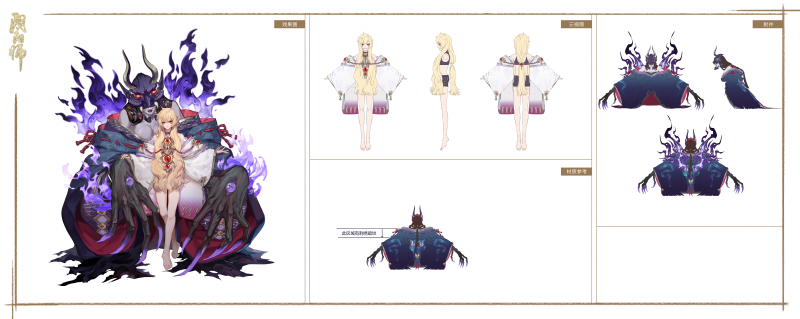

| 觉醒前 | 三视图 | |||
|---|---|---|---|---|
|  |
| 觉醒前 | 觉醒后 | |
|---|---|---|
| 属性 | 无法觉醒 | |
| 攻击 | S 145 | |
| 生命 | A 1099 | |
| 防御 | C 65 | |
| 速度 | S 115 | |
| 暴击 | S 10% | |
| 暴击伤害 | 150% | |
| 效果命中 | 0% | |
| 效果抵抗 | 0% |
| 技能台词 | 语音台词 | 技能效果 | 技能属性 | 技能图标 |
|---|---|---|---|---|
| 恨返 | 将这怨恨，加倍奉还！ | 攻击敌方目标，造成攻击100%伤害。 若开启封印结界，则此技能改为攻击敌方目标2次，每次造成攻击80%伤害，15%吸血。 （唯一效果）获得1层仇恨印记。 仇恨印记：【通用，印记】御怨般若的特殊机制，上限9层。当达到上限时，解除自身所有控制效果并增加35%行动条。 开启封印结界时，无法获得仇恨印记。 | Lv.2 伤害增至105%，开启结界后伤害增至每次84%
Lv.3 伤害增至110%，开启结界后伤害增至每次88% Lv.4 伤害增至115%，开启结界后伤害增至每次92% Lv.5 伤害增至125%，开启结界后伤害增至每次100% |
|
| 积重难返 | 向你赠予我的鬼面起誓，向你的仇恨献上忠诚。 | 唯一效果。 当敌方造成伤害暴击时，40%概率获得1层仇恨印记，每个行动内最多触发一次。 【施放】需消耗9层仇恨印记来施放。开启附有9个鬼面的封印结界笼罩敌方；所有鬼面破碎时自动关闭结界，并有100%基础概率为敌方全体附加仇恨蔓延，持续1回合。 | Lv.2 非召唤物的友方阵亡时，获得3层仇恨印记
Lv.3 消耗鬼火减少3点 Lv.4 触发概率增至80% Lv.5 先机：获得6层仇恨印记 |
|
| 怨恨祛除 | 向你赠予我的鬼面起誓，向你的仇恨献上忠诚。 | 敌方可主动施放此技能，击碎2个鬼面，使封印结界提早关闭。 | Lv.2 非召唤物的友方阵亡时，获得3层仇恨印记
Lv.3 消耗鬼火减少3点 Lv.4 触发概率增至80% Lv.5 先机：获得6层仇恨印记 |
|
| 予愿必还 | 一定，一定会回应你的恨意。 | 攻击敌方目标3次，每次造成攻击72%伤害。然后攻击敌方全体1次（若开启封印结界，再增加1次），每次造成攻击72%伤害。 （唯一效果）获得3层仇恨印记。 | Lv.2 伤害增至74%
Lv.3 伤害增至77% Lv.4 伤害增至80% Lv.5 每有一个非召唤物、且生命比例低于50%的友方，便对1个随机敌方目标造成攻击80%伤害 |